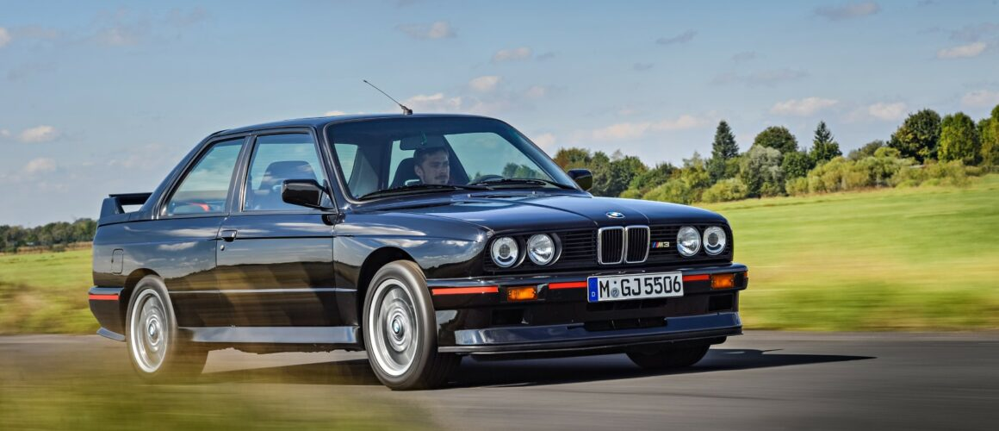

---- BMW THROUGH THE YEARS
Design & Evolution
BMW design has changed significantly over the years. From the clean and simple lines of older generations to the more aggressive and modern styling seen in recent models, the brand has continued to evolve while still keeping its recognizable performance identity. Features such as the kidney grille, headlights, body proportions, and overall shape have changed from generation to generation, giving each era its own unique appearance. Some older BMWs are known for their simple and timeless designs, while newer models focus more on bold styling, sharper lines, and a stronger road presence. On this page, I will compare different BMW generations, look at some of the major design changes, and share my personal thoughts on which styles I prefer and how BMW design has evolved over time.

E30 M3
The E30 M3 has an angular shape, round headlights, and a small kidney grille. Its simple lines give it a classic appearance, while the wider fenders add a sporty look.
My Design Rating: 8/10
8 out of 10

G80 M3
The G80 M3 has a bolder appearance with a tall kidney grille, sharp headlights, and sculpted body lines. Its wide stance gives it a more aggressive look than the older M3.
My Design Rating: 9/10
9 out of 10
---- WHAT CHANGED
From Subtle to Aggressive
One of the biggest changes in BMW design is the front end. Older models typically used smaller kidney grilles, softer body lines, and simpler headlights. Newer models have introduced much larger grilles, sharper lighting, and more detailed and aggressive bumpers. BMW has also moved toward wider and more muscular proportions, especially on its M cars.
Even with these changes, some traditional BMW details remain. The kidney grille is still one of the most recognizable elements of the brand, and M models continue to use wider fenders, large wheels, and unique aerodynamic details to stand out from standard models.